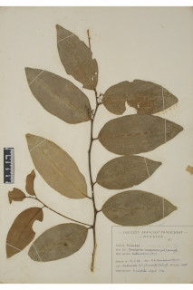
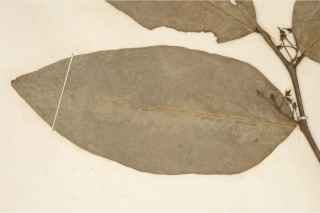
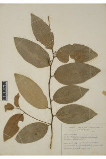
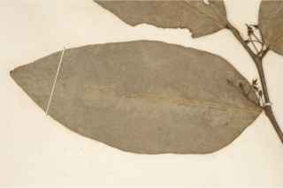
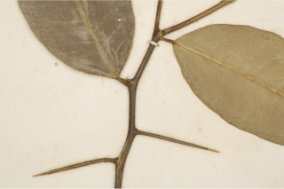
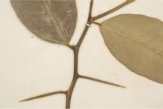

Images :
 



 


| Habit : | Shrubs or small trees up to 4 m tall. |
| Leaves : | Leaves simple , alternate , spiral ; petiole 0.5-1 cm long, planoconvex in cross section, glabrous , articulate ; lamina 7.5-13 x 3-6 cm, elliptic-ovate to elliptic-lanceolate , apex narrowly acute to acuminate with retuse tip, base acute , margin entire , coriaceous , glabrous , glandular punctate , pale beneath, drying olive green; midrib raised above; secondary_nerves 10-18 pairs; tertiary_nerves admedially ramified . |
| Inflorescence / Flower : | N/A |
| Fruit and Seed : | N/A |